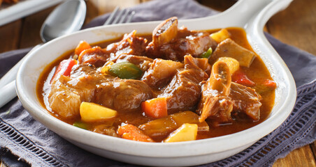

Caldereta

At this point you might be asking, who's karldreta? Well, while on the topic of food, karldreta or rather Caldereta,
is a hearty and flavorful Filipino stew that is known for its rich and savory taste. It has Spanish origins,
influenced by the centuries of Spanish colonization in the Philippines, and has evolved into a distinct Filipino dish.
Ingredients:
- 2 lbs beef stew meat, cut into cubes
- 1/4 cup cooking oil
- 1 large onion, finely chopped
- 4 cloves garlic, minced
- 1 can (8 oz) tomato sauce
- 1/2 cup liver spread or liver paste
- 1 cup beef broth
- 2 large potatoes, peeled and sliced into rounds
- 2 carrots, peeled and sliced into rounds
- 1 red bell pepper, sliced
- 1 green bell pepper, sliced
- 1 cup green olives
- 1 bay leaf
- 1 teaspoon sugar
- Salt and pepper to taste
- 1/2 cup grated cheese (optional)
- Chili peppers (optional, for added heat)
- Fresh parsley or green onions for garnish
Instructions
- In a large pot, heat the cooking oil over medium heat. Sauté the onions and garlic until aromatic and translucent.
- Add the beef cubes and brown them on all sides. This adds depth of flavor to the stew.
- Pour in the tomato sauce, liver spread, and beef broth. Stir well to combine.
- Add the bay leaf, sugar, salt, and pepper. Bring the mixture to a boil, then reduce the heat to low, cover, and let it simmer until the beef is tender (this may take about 1.5 to 2 hours).
- Add the potatoes, carrots, red and green bell peppers, and green olives. Continue simmering until the vegetables are cooked and the sauce has thickened.
- If using cheese, add it to the pot and stir until melted.
- Taste and adjust the seasoning according to your preference. You can add more salt, pepper, or even a bit of sugar to balance the flavors.
- Garnish with fresh parsley or green onions. If you like it spicy, you can add chili peppers. Serve the caldereta hot over steamed rice.
Caldereta is often served with steamed rice, and its bold and savory taste makes it a favorite at family gatherings
and special occasions in Filipino cuisine. But why is do I use a name after a cousine? Well, that is a story for the interviews!